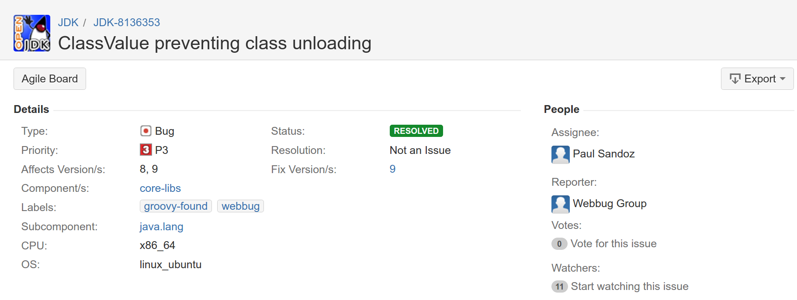
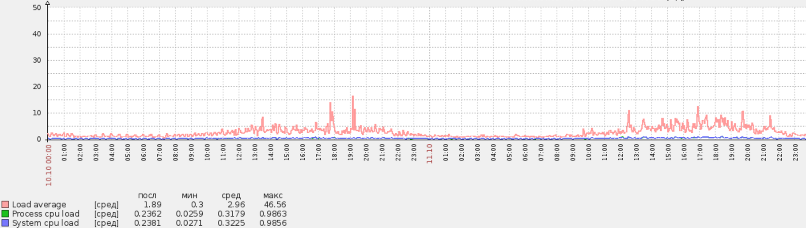

Bitter Java. 8
Кирпиченков Денис / dkirpichenkov@naumen.ru
d0k1.github.io/BitterJava8/

Attention
NSD 4 Experience.Only.
Why Java 8
- Interface default methods
- Stream API
- Lambdas
- CompletableFuture
Why Java 8
- Interface default methods
- Stream API
- Lambdas
- CompletableFuture
- Java 7 end of life
In Tests we trust
- Unit, Integration, UI
- performance tests
Expectations
2..5 week
Java changes
NSD 4 Code adaptation
Let's move
One pom.xml
<plugin>
<groupId>org.apache.maven.plugins</groupId>
<artifactId>maven-compiler-plugin</artifactId>
<configuration>
<source>1.8</source>
<target>1.8</target>
</configuration>
</plugin>
Build failed
- GWT не поддерживает Java 8
- Указание типа при вызове Generic методов
Just 26 tests failed
из 6k+
всего то
Surprise: JAXB!
@XmlRootElement
public static final class Foo {
private ArrayList<Bar> bars = null;
@XmlElementWrapper(name = "bars")
@XmlElement(name = "bar")
public List<Bar> getBars() {
return bars;
}
public void setBars(List<Bar> bars) {
if (bars == null) {
this.bars = null;
} else if (this.bars != bars) {
this.bars = new ArrayList<>(bars);
}
}
}
NSD 4 Business operation
HashMap m = new HashMap()
m.put('parent', '1')
m.put('description', '4')
m.put('source', '5')
m.put('sourceFqn', '6')
m.put('content', '7')
m.put('parentUUID', '8')
// редактирование объекта
editObject(theObject, m);
NSD 4 Attribute priorities
/*
m.put('parent', '1')
m.put('description', '4')
m.put('source', '5')
m.put('sourceFqn', '6')
m.put('content', '7')
m.put('parentUUID', '8')
*/
// упорядочивание операций
sortOperations()
/*
[parent, parentUUID, description, source, sourceFqn, content]
*/
HashMap
HashMap m = new HashMap()
m.put('parent', '1')
m.put('description', '4')
m.put('source', '5')
m.put('sourceFqn', '6')
m.put('content', '7')
m.put('parentUUID', '8')
m.keySet()
/*
J7: [content, sourceFqn, source, description, parent, parentUUID]
J8: [parent, description, source, sourceFqn, content, parentUUID]
*/
How Misusing Streams Can Make Your Code 5 Times Slower

javac -target 1.7
import java.util.Set;
import java.util.concurrent.ConcurrentHashMap;
public class Hello {
public static void main(String[] args) {
ConcurrentHashMap<String, String> properties = new ConcurrentHashMap<>();
Set<String> keySet = properties.keySet();
}
}
/usr/lib/jvm/java-8-oracle/bin/javac -source 1.7 -target 1.7 Hello.java
/usr/lib/jvm/java-7-oracle/bin/java Hello
javac -target 1.7
import java.util.Set;
import java.util.concurrent.ConcurrentHashMap;
public class Hello {
public static void main(String[] args) {
ConcurrentHashMap<String, String> properties = new ConcurrentHashMap<>();
Set<String> keySet = properties.keySet();
}
}
/usr/lib/jvm/java-8-oracle/bin/javac -source 1.7 -target 1.7 Hello.java
/usr/lib/jvm/java-7-oracle/bin/java Hello
Exception in thread "main" java.lang.NoSuchMethodError:
java.util.concurrent.ConcurrentHashMap.keySet();
Production testing
J7: [content, sourceFqn, source, state, description, parent, parentUUID]
J8: [parent, state, description, source, sourceFqn, content, parentUUID]
// скрипт на вход в статус (изменение атрибута state)
log.info(''+source+''+sourceFqn);
Production testing
J7: [content, sourceFqn, source, state, description, parent, parentUUID]
J8: [parent, description, source, sourceFqn, state, content, parentUUID]
@DependsOn('source,sourceFqn')
// скрипт на вход в статус (изменение атрибута state)
log.info(''+source+''+sourceFqn);
JVM Changes
new reality
Metaspace
-XX:MaxMetaspaceSize=256mNSD 4 Cloud
100+ VM:- Ubuntu linux
- 1-2 CPU
- 2Gb RAM
Memory leaks
- OOM Killer
- JVM Crash: cannot allocate memory
Java 8 vs 7 Memory
| Pool | Java 8 | Java 7 |
|---|---|---|
| PS Survivor Space | 24 MB | 24 MB |
| PS Eden Space | 362.5 MB | 362.5 MB |
| PS Old Gen | 820 MB | 820 MB |
| Metaspace/PermGen | 230 MB | 230 MB |
| Code Cache | 240 MB | 48 MB |
| Compressed Class Space | 1 GB | 0 |
Compressed Class Space
-XX:-UseCompressedOops -XX:-UseCompressedClassPointers -XX:CompressedClassSpaceSize=1G
java.lang.OutOfMemoryError: Compressed class space
Code cache
-XX:ReservedCodeCacheSize=48m -XX:InitialCodeCacheSize=48m
Native Memory Tracking
-XX:NativeMemoryTracking=summary -XX:NativeMemoryTracking=details
jcmd PID VM.native_memory baseline jcmd PID VM.native_memory summary.diff jcmd PID VM.native_memory detail.diff
Total: reserved=2996914KB +94723KB, committed=1844886KB +164155KB
- Java Heap (reserved=1259520KB, committed=1259520KB)
(mmap: reserved=1259520KB, committed=1259520KB)
- Class (reserved=1259566KB +72758KB, committed=235910KB +80438KB)
(classes #34708 +7329)
(malloc=8238KB +3126KB #105182 +59942)
(mmap: reserved=1251328KB +69632KB, committed=227672KB +77312KB)
- Thread (reserved=82225KB +6766KB, committed=82225KB +6766KB)
(thread #154 +13)
(stack: reserved=81508KB +6708KB, committed=81508KB +6708KB)
(malloc=506KB +43KB #768 +65)
(arena=211KB +15 #306 +26)
- Code (reserved=276771KB +13456KB, committed=148399KB +75208KB)
(malloc=27171KB +13456KB #32967 +13362)
(mmap: reserved=249600KB, committed=121228KB +61752KB)
- GC (reserved=48393KB +23KB, committed=48393KB +23KB)
(malloc=2369KB +23KB #1915 +731)
(mmap: reserved=46024KB, committed=46024KB)
- Compiler (reserved=592KB +146KB, committed=592KB +146KB)
(malloc=461KB +146KB #964 +280)
(arena=131KB #3)
Groovy leak
GROOVY-7683 Memory leak when using Groovy as JSR-223 scripting language.
JDK-8136353 ClassValue preventing class unloading
ClassValue
java.lang.ClassValue
JDK-6389107 Request Reference.link(Object,Object) for "biweak" caches
// trivial cache that prevents GC to unload classes
Map<Class<?>, T>
// weak references as keys don't help GC to unload classes
WeakHashMap<Class<?>, T>
// the solution
ClassValue<T> cache;
Groovy leak
GROOVY-7683 Memory leak when using Groovy as JSR-223 scripting language.
JDK-8136353 ClassValue preventing class unloading
ClassValue doesn't leak
Load Average got high
C1, C2 Compilers
Jstack:"C1 CompilerThread2" #8 daemon prio=9 java.lang.Thread.State: RUNNABLE "C2 CompilerThread1" #7 daemon prio=9 java.lang.Thread.State: RUNNABLE "C2 CompilerThread0" #6 daemon prio=9 java.lang.Thread.State: RUNNABLECatalina.out
Java HotSpot(TM) 64-Bit Server VM warning: CodeCache is full. Compiler has been disabled. Java HotSpot(TM) 64-Bit Server VM warning: Try increasing the code cache size using -XX:ReservedCodeCacheSize=
Tiered Compilation enabled
Java 8 defaults:
-XX:+TieredCompilation
-XX:ReservedCodeCacheSize=240m
48m нехватит для C1 и C2
-XX:ReservedCodeCacheSize=48m